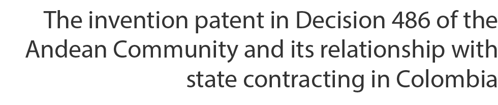

* Este artículo es resultado del proyecto de investigación “El mercado de la compra pública entre la libre competencia y los derechos de propiedad industrial”, realizado por el Grupo Derecho Público y Sociedad de la Corporación Universitaria Republicana.
§ Abogado de Unicoc, especialista en Derecho Público de la Corporación Universitaria Republicana, especialista y magíster en Contratación Estatal de la Universidad de La Sabana, especialista en Derecho de la Propiedad Intelectual (c.) de la Universidad Sergio Arboleda. Profesor investigador de la Corporación Universitaria Republicana, Colombia; socio del Grupo Empresarial Biolegal S. A. S. y abogado contratista de la Dirección de Nuevas Creaciones de la Superintendencia de Industria y Comercio. Las reflexiones planteadas en el presente artículo no reflejan la posición de las instituciones a las cuales se encuentra vinculado el autor.
Correo electrónico: camaya@urepublicana.edu.co
Cómo citar:
Zapata Flórez, J. (2022). Competencia desleal vinculada a la propiedad industrial: caracterización desde el régimen jurídico andino y colombiano. Civilizar: Ciencias Sociales y Humanas, 22(43), e20220204. https://doi.org/10.22518/jour.ccsh/20220204
ISSN 1657-8953 e-ISSN: 2619-189X
Recibido: 21/06/2021
Revisado: 23/06/2022
Aceptado: 08/07/2022
Licencia Creative Commons Atribución-NoComercial-SinDerivar 4.0 Internacional
(CC BY-NC-ND 4.0).
Resumen
El presente artículo pretende identificar los puntos de convergencia entre la propiedad industrial, a partir de los derechos conferidos por las patentes de invención, y la contratación estatal como actuación administrativa establecida para la gestión de los fines del Estado. Dicha relación se constituye en el campo del interés general, en el entendido de que la protección de la propiedad industrial no solo debe ser reputada del titular de derechos conferidos en el ámbito de aquella, sino también en beneficio de la sociedad, lo cual se identifica en las diferentes limitaciones al ejercicio del privilegio de patente; esto último es una de las finalidades del sistema de compra pública, aspecto que será analizado en el ámbito de la contratación directa, bien sea por la ausencia de pluralidad de proponentes o por la celebración de contratos cuyo objeto tenga relación con el desarrollo de ciencia y tecnología.
Palabras clave
Patentes, alcance del derecho, compra pública, planeación, contratación directa.
Abstract
This article aims to identify the meeting points in industrial property based on the rights conferred by invention patents and state contracting as an administrative action established for the management of governmental purposes. Such a relationship is in the general interest, since the protection of industrial property must not only be reputed by the holder of rights, but also for the benefit of society, which is identified in the different limitations to the exercise of patent privileges. The latter is one of the objectives of public procurement systems, an aspect that should be examined in the field of direct contracting, either due to the absence of plurality of bidders or to the conclusion of contracts whose purpose is related to the development of science and technology.
Keywords
Patents, scope of law, public procurement, planning, direct contracting.
Carlos Fernando Amaya Rodríguez§
La patente de invención en la Decisión 486 de la Comunidad Andina y su relación con la contratación estatal en Colombia*
Civilizar: Ciencias Sociales y Humanas, 22(43), julio-diciembre 2022
DOI: https://doi.org/10.22518/jour.ccsh/20220204

e20220204
Introducción
Cuando se habla de las patentes de invención como forma de protección de derechos de propiedad industrial de naturaleza individual y de la contratación estatal como herramienta administrativa para la gestión del interés general o las necesidades sociales, resulta válido en una primera mirada considerar que ambas categorías son en principio excluyentes entre sí. Sin embargo, en una segunda aproximación al tema es posible considerar la existencia de al menos un punto de convergencia entre ambas temáticas, y entender que el cumplimiento de los fines pretendidos por la compra pública puede verse beneficiado de la utilización del sistema de patentes.
Lo anterior encuentra sentido en el hecho de que, si bien es cierto que las patentes de invención como forma de protección de derechos exclusivos en cabeza de su titular sobre los productos o procedimientos a partir de los cuales se ha verificado no solo el cumplimiento de los requisitos de novedad, nivel inventivo y aplicación industrial, sino también el hecho de que el titular debe haber realizado la divulgación total de la información necesaria para reproducir la invención, esta última condición se debe apreciar como un beneficio para la sociedad, derivado del sistema de protección de patentes, al permitir conocer a fondo la tecnología desarrollada con ocasión de la invención.
Este aspecto es reconocido en la Decisión 486 de la Comunidad Andina (en adelante Decisión 486), al determinar que debe existir una correspondencia entre los derechos exclusivos del titular y la promoción de un beneficio para la sociedad en procura del interés general. En efecto, esta situación se evidencia en el hecho de que la información tecnológica contenida en los documentos de patente debe ser de público acceso, a fin de permitir que se continúe con el desarrollo de nuevas soluciones técnicas en beneficio de la humanidad.
Conviene poner de presente que los derechos exclusivos y de exclusiva explotación otorgados por una patente de invención son bienes intangibles susceptibles de comercialización en el mercado, por lo que no resulta descabellado considerar que tales bienes pueden participar en la gestión del mercado de la compra pública y los procesos de contratación estatal. Al respecto, debe entenderse que la compra pública constituye una herramienta para la gestión del interés general y la atención de las necesidades sociales mediante la adquisición de los bienes y servicios definidos para tal propósito por parte de la Administración Pública, así como aquellos requeridos para su normal y continuo funcionamiento.
A partir de lo expuesto resulta pertinente considerar si existe o no una convergencia entre la figura de la patente de invención y el sistema de compra pública, y en caso de considerarse su existencia, advertir cual podría ser ese elemento o punto de articulación entre los dos, proponiendo desde ya que dicha convergencia se encuentra representada en el interés general que se puede apreciar en ambas categorías temáticas, al considerar que, con ocasión de este, el Estado tendrá la oportunidad de contar con bienes de alta calidad representados en las patentes, así como la posibilidad de promover el desarrollo y transferencia de ciencia y tecnología por medio de esta actuación ejecutada en cumplimiento de los fines estatales.
Para tal propósito, el presente artículo se encuentra dividido en tres grandes acápites, el primero de ellos orientado a la revisión de las generalidades de la contratación estatal y su tránsito hacia un sistema de compra pública; en el segundo acápite se realizará una revisión de la patente de invención en el contexto de la Decisión 486, analizando los requisitos para su concesión, así como los derechos y el alcance de ellos una vez la patente ha sido concedida. Finalmente, en el tercer acápite se dará tratamiento a la hipótesis antes propuesta, es decir, la identificación del interés general como elemento articulador entre los dos componentes principales de este trabajo, a partir de la revisión de la modalidad de selección de contratación directa fundamentada en la ausencia de pluralidad de proponentes y la celebración de contratos de ciencia y tecnología, todo esto en el contexto de la proposición de buenas prácticas para la adquisición de bienes y servicios reivindicados por una patente de invención y la compresión de la compra pública como instrumento para la ejecución del gasto público, sino que, en suma puede permitir la satisfacción del interés general más allá de la ejecución de obras u otros objetos contractual, en ejercicios de desarrollo y promoción de la ciencia y tecnología.
Metodología
El presente artículo es resultado de una investigación de corte exploratorio, desarrollada en aplicación del método deductivo, pues se parte de la revisión de los marcos normativos y doctrinales como fuentes secundarias, de la patente de invención y de la contratación estatal, para finalmente proponer una serie de consideraciones en torno a los puntos de interacción de aquellas con el interés general como vértice de convergencia.
El privilegio de patente en el contexto de la Decisión 486 de la Comunidad Andina
La propiedad industrial, entendida como la protección jurídica para las creaciones intelectuales del hombre con aplicación en la industria, el comercio y la tecnología, es sin lugar a dudas uno de los elementos de mayor relevancia en los tiempos de la cuarta revolución industrial. En este contexto, se resalta a las patentes de invención como expresión de la protección de desarrollos e innovaciones fruto de la creatividad del ser humano, por medio de la cual su titular recibe del Estado una serie derechos exclusivos sobre su invención, a cambio de revelar toda la información necesaria para la comprensión y reproducción de la invención.
Este apartado se encuentra dividido en dos puntos, el primero de ello dedicado a la revisión de la noción y concepto de la patente de invención, así como de los requisitos establecidos en la Decisión 486 para su concesión. En el segundo se realiza un tratamiento de los derechos concedidos por la patente de invención y el alcance de los mismos; todo esto orientado desde la arista de establecer la presencia del interés general como un elemento propio en el ámbito del sistema de protección de patentes.
Noción del concepto de patente y requisitos para su concesión
La patente de invención es una protección de los derechos de propiedad industrial mediante la cual el Estado confiere un título de propiedad sobre un producto o procedimiento que ha reunido los requisitos establecidos por la legislación, por proporcionar una solución técnica e innovadora a un problema técnico sin resolver, a su titular, quien podrá ser una o varias personas naturales o jurídicas. En este contexto, su importancia radica, de una parte, en la protección de los esfuerzos intelectuales contenidos en una invención ante la apropiación indebida por terceros y, de otra, en el sentido que el sistema de patentes beneficia a la sociedad a partir de la divulgación de la información contenida en los documentos de patentes (Rengifo García, 2016, pp. 65-66).
Así entendida, la patente de invención se expresa como un contrato entre el inventor y la sociedad que verdaderamente apunta a ser un incentivo para el desarrollo de investigación por parte de los inventores y asegurar los beneficios de la sociedad de poder acceder a dicha información y tecnología, superando de esta forma el secreto que sobre ellas en algún momento pudo llegar a existir, elemento común en casi todas las legislaciones de patentes en el mundo (Castro García, 2009, pp. 243-245). Tal aspecto es debidamente atendido en el artículo 28 de la Decisión 486, al establecer como requisito para la concesión del privilegio de patente la divulgación suficiente, clara y completa de la invención (Ramon Sauri, 2015, p. 25).
No obstante, la divulgación no es el único requisito establecido para que el Estado otorgue el privilegio de patente a una invención, pues de conformidad con los tratados internacionales, así como con las normas nacionales, una patente solo será concedida cuando cumpla con los requisitos de novedad, altura inventiva y aplicación industrial, los cuales se encuentran establecidos en el artículo 14 de la Decisión 486, que en todo caso deberán ser analizados en conjunto con otros artículos de dicha norma, tales como los 15-21 y 30.
Así las cosas, el requisito de novedad determina que toda invención debe ser nueva, es decir, que la solución técnica propuesta en la solicitud de patente, así como los demás elementos que la conforman, no deben haber sido objeto de divulgación previa a la fecha de presentación o de prioridad válidamente invocada. Es preciso indicar que la novedad es analizada de forma universal, es decir que cualquier divulgación que se haya efectuado previamente a los momentos antes indicados, en cualquier lugar del mundo y por cualquier medio, afectará el cumplimiento de este requisito por parte de la solicitud de patente.
Por lo tanto, la novedad debe ser entendida como un requisito que permite garantizar que las invenciones protegidas en virtud del privilegio de patente sean verdaderamente novedosas frente al conjunto de conocimientos, información y saberes de público y universal acceso. De tal suerte que la acreditación de la novedad se da cuando se evidencia que las reivindicaciones difieren sustancialmente del estado de la técnica compuesto por todos los conocimientos, saberes, información, entre otros, referidos a un campo en particular que han sido y son de público acceso (Díaz Vera y Rengifo García, 2016, pp. 146, 192-193).
Por su parte el requisito de nivel inventivo establece que la solicitud de patente muestre un verdadero ejercicio del intelecto humano, el cual no debe ser obvio para alguien versado en la materia técnica del ámbito de la invención, aspecto que es reconocido como un requisito común en casi todas las legislaciones en materia de patentes y que en la Decisión 486 se establece en su artículo 18 (Guerrero Gaitán, 2016b, p. 206). De igual forma, el nivel inventivo exige que la invención no debe ser una simple derivación del estado de la técnica para una persona normalmente versada en la materia (Tribunal de Justicia de la Comunidad Andina, proceso 463-IP-2019).
Para adelantar la verificación de dicho requisito es necesario recurrir al método problema-solución con el fin de evitar subjetividades durante el examen de patentabilidad; dicho método implica en primer lugar determinar el estado de la técnica más cercano a la solicitud, posteriormente, la identificación de las características técnicas de la invención que son diferentes de las anterioridades, la definición del problema técnico a solucionar, siendo estos los elementos objetivos de juicio sobre los cuales se estudiará el cumplimiento del requisito en mención. En efecto, será a partir de los contenidos de los documentos que conformen el estado de la técnica que se podrá determinar de forma objetiva si la solución técnica que propone la solicitud de patente es o no una simple variación de aquellos (Alemán Badel, 2001, p. 25).
Finalmente, con relación al requisito de aplicación industrial se debe indicar que este representa la necesidad de que la invención pueda aplicarse a una escala industrial, tal como se expresa en el artículo 19 de la Decisión 486. Esta situación permite evidenciar una diferencia de la protección otorgada por el sistema de patentes respecto de otras formas de protección de propiedad intelectual, pues el primero se ubica en el campo de la industria y la técnica, mientras que, por ejemplo, los derechos de autor se ubican en el campo artístico y estético de los bienes protegidos (Castro García, 2009, p. 279).
Así las cosas, cuando la oficina nacional competente en materia de propiedad industrial de un Estado miembro de la Comunidad Andina haya verificado el cumplimiento de los tres requisitos ya referidos, en conjunto con los demás análisis que deberán realizarse durante la etapa de examen de forma y de fondo, debe proceder a la concesión del privilegio de patente, el cual otorga al titular un conjunto de derechos exclusivos, cuyo tratamiento y análisis se realizará a continuación.
Los derechos conferidos por el privilegio de patente y su alcance
La patente de invención puede entenderse como un contrato entre el Estado y el titular de la patente, al que solo es posible acceder cuando la solicitud acredita los requisitos de patentabilidad antes expuestos. Dicho contrato reconoce al titular la posibilidad de ejercer durante un período de tiempo determinado una serie de derechos exclusivos, cuando su invención además de representar un verdadero avance tecnológico se ha divulgado toda la información y datos que comprenden la invención.
En este sentido conviene indicar que la patente es una expresión de la propiedad sobre bienes intangibles o incorpóreos resultados de la actividad creadora del hombre, en contraposición al esquema clásico de la propiedad que se predica sobre cosas o bienes tangibles. No obstante, tal propiedad no es reputada de dichas creaciones, sino de los derechos y prerrogativas que se establecen para la explotación jurídica y goce de aquellas (Álvarez Amézquita et al., 2015, p. 65).
Al respecto, el capítulo V del título II de la Decisión 486 establece los derechos que son conferidos con ocasión del otorgamiento de una patente de invención, los cuales se podrán ejercer durante un período de tiempo determinado. Dichos derechos se representan en dos dimensiones desde la perspectiva del titular, una positiva en cuanto al poder hacer uso de la creación reivindicada y una negativa por el derecho de impedir que un tercero haga uso de la invención sin su autorización previa y expresa (Toro Mejía, 2011, p. 5). Ahora bien, la patente de invención tendrá un plazo de vigencia de 20 años que será computado desde la fecha de presentación de la solicitud en el país miembro de la Comunidad Andina, en virtud del artículo 50 de la Decisión 486, por lo que solo será durante dicho período de tiempo cuando se podrán ejercer y reclamar la observancia de los derechos conferidos por la patente.
Dicho período de vigencia, en todo caso, deberá contemplar lo dispuesto por el literal d del artículo 1 de la Decisión 689 de la Comunidad Andina, el cual dispone que cuando la Superintendencia de Industria y Comercio incurra en un retraso irrazonable en el procedimiento de estudio y concesión de la patente, se podrá solicitar, en los términos del artículo 2.2.2.1.22.1 del Decreto 1074 de 2015, la compensación de ese plazo de duración, período en el cual el titular conservará los mismos derechos y obligaciones que en el período normal de vigencia de la patente.
De igual forma, el alcance de la protección otorgada por este derecho, es decir, el ámbito sobre el cual el titular ejercerá sus derechos se determinará por el tenor de las reivindicaciones que fueron concedidas, de conformidad con el artículo 51 de la Decisión 486, para lo cual, de ser necesario, se podrá acudir a la descripción, los dibujos, o, si es el caso, el material biológico depositado para comprender e interpretar dicho alcance. Por lo tanto, la redacción de las reivindicaciones debe ser lo más clara y concisa posible, y estar sustentadas dentro del alcance de la descripción divulgada de la solicitud, tal como lo exige el artículo 30 de la ya mencionada normatividad andina de propiedad industrial.
Queda claro que la interpretación de la materia reivindicada debe realizarse al tenor literal de las palabras que conforman la o las reivindicaciones concedidas, sin que sea posible hacer consideraciones más allá de dicho alcance y mucho menos introducir palabras o frases que no se encuentran contenidas en el pliego reivindicatorio concedido. Sin embargo, tal interpretación debe ser guiada por el análisis de la descripción de la solicitud de patente como un criterio auxiliar, de conformidad con la legislación andina.
Ahora bien, entendiendo que la patente confiere a su titular unos derechos de uso exclusivo o “derechos positivos” y la posibilidad de oponerse al uso no autorizado por parte de terceros de su invención o “derechos negativos” (Matiz Bulla, 2003, p. 89), aquello debe ser valorado a la luz de lo establecido por el artículo 52 de la Decisión 486. Dicha disposición contempla de forma expresa sobre qué situaciones o actos el titular de una patente de invención puede oponerse o impedir su realización por terceros, condición que variará en atención a si la patente reivindica un producto o un procedimiento.
Así, cuando una patente de invención reivindica un producto el titular podrá impedir que terceros fabriquen, ofrezcan, vendan, usen el producto o realicen su importación para alguno de estos fines. Por su parte, cuando la reivindicación recae sobre un procedimiento el titular podrá impedir que este sea utilizado por terceros o se ejecuten los actos referidos para las patentes de producto, cuando aquel sea obtenido de forma directa por el procedimiento patentado.
Sobre esta última situación, la Decisión 486 contempla que el titular podrá explotar la patente de invención directamente o por medio de terceros debidamente autorizados o licenciados, para lo cual se deberán observar las reglas fijadas por el artículo 57 de la ya mencionada normatividad. En todo caso, es preciso indicar que el contrato de licencia de patente no es el único instrumento por medio del cual el titular de la patente podrá explotar su invención, pues en atención a la autonomía de la voluntad aquel podrá hacer uso de una amplia gama de fórmulas y tratativas contractuales con el ánimo de dar explotación a su invención conforme a sus intereses (Guerrero Gaitán, 2016a, p. 728).
Sin embargo, debe tenerse presente que los derechos conferidos por la patente de invención antes mencionados no son absolutos, es decir, pueden ser objeto de limitaciones, establecidas de forma expresa por parte de la Decisión 486, que en suma encuentran justificación en la protección del beneficio colectivo de la sociedad, es decir, del interés general. Lo anterior en la medida que el titular de los derechos conferidos por una patente no puede abusar de los mismos (Conde, 2021, p. 322), lo que da lugar a la existencia de flexibilidades y limitaciones de tales derechos durante su período de vigencia, tales como las licencias obligatorias (en especial aquellas fundadas en razones de interés general), la figura de las importaciones paralelas, el agotamiento del derecho.
Así las cosas, teniendo en cuenta que la patente de invención se entiende como un bien intangible, resulta pertinente analizar cómo dicho bien debe ser comprendido desde la óptica del mercado de la compra pública y la contratación estatal. Para esto, en el siguiente apartado de este artículo se realizará un breve tratamiento de tales conceptos como preámbulo para el desarrollo de la hipótesis propuesta en este escrito, es decir, que existe relación entre los dos temas a partir de la figura del interés general y cómo la gestión de tal interés por parte de la compra pública se puede ver beneficiada del uso del sistema de patentes.
La contratación pública como herramienta para la atención de necesidades sociales y el interés general
El Estado tiene a su cargo una serie de fines esenciales establecidos en el artículo 2 de la Constitución Política de 1991, los cuales pueden ser resumidos en la obligación de brindar atención a las necesidades sociales y el interés general, función que justifica una serie de atribuciones y prerrogativas especiales en favor de la Administración Pública. En efecto, el interés general se concibe como una de las principales justificaciones para el otorgamiento de atribuciones especiales al Estado, pero a su vez representa la necesidad de construir límites concretos para el ejercicio de dichas situaciones, es decir, la aplicación del principio de legalidad (Balbín, 2014).
Tal connotación se desprende del artículo 3 de la Ley 80 de 1993, en el que se establece que la celebración y ejecución de contratos por parte de las entidades públicas se realizará con el propósito de garantizar el cumplimiento de los fines del Estado y asegurar la continua prestación de los servicios públicos (Consejo de Estado, Sala de lo Contencioso Administrativo, Sección Tercera, 2011). Dentro de este panorama es preciso indicar que la contratación estatal se encuentra sujeta de forma especial al principio de legalidad, bien sea en las reglas del derecho público como fuente principal de trabajo, o en otros sistemas jurídicos como el derecho civil y comercial (Fandiño Gallo, 2014).
Expresada así, la gestión del interés general o público justifica la contratación estatal y el contrato estatal per se, en la medida que es a partir de dicha justificación que se estructura un sistema especial que en gran medida rompe con las reglas propias de la contratación entre particulares. Tales prerrogativas se expresan en los elementos excepcionales presentes en la normatividad aplicables a la contratación estatal, tales como las cláusulas exorbitantes, el equilibrio económico del contrato, la limitación en cierto grado a la autonomía de la voluntad, por mencionar algunos elementos (Corte Constitucional, Sentencia C-923/07).
Ahora bien, la contratación estatal como actuación administrativa se encuentra orientada por principios, en la medida que el marco normativo aplicable a aquella es reconocido como un verdadero estatuto de principios que definen los marcos generales para su desarrollo y comprensión (Rodríguez Tamayo, 2022). Dentro de dichos principios se pueden mencionar los de transparencia, responsabilidad y economía, expresamente contemplados en la Ley 80 de 1993, en suma a los principios de selección objetiva, equilibrio económico del contrato, planeación, así como aquellos establecidos por el artículo 209 constitucional; los cuales, en conjunto, convergen en orientar la contratación estatal hacia el interés general.
Conforme a lo antes expuesto, para el desarrollo de la contratación estatal es preciso indicar que esta se compone de tres etapas principales, a saber: precontractual, contractual y pos contractual, por medio de las cuales se desarrollarán diferentes actividades desde la preparación del contrato, su ejecución y la liquidación de la relación contractual en caso de ser procedente; de esta forma se ejecuta el gasto público. La de mayor interés para este artículo es la etapa precontractual, pues es con ocasión de las diferentes actividades que se desarrollan en aquella que se determinarán de forma clara y concreta cuál es el objeto y necesidad que se pretende atender con la ejecución del futuro contrato, mediante la correcta identificación de los bienes y servicios que son demandados en colaboración de los particulares para el cumplimiento de los fines del Estado.
Ahora bien, no debe perderse de vista que la contratación estatal buscará, dentro de los propósitos y alcances antes descritos que el Estado adquiera en el cumplimiento de sus fines, los bienes y servicios de las más altas calidades y en la medida de lo posible al menor costo. Tal situación lleva a considerar la existencia de un mercado en el que la Administración es el demandante y los proponentes/contratistas los oferentes, situación que ha llevado a considerar la existencia de un mercado de compra pública del que procederemos a ocuparnos a continuación.
De la contratación estatal al mercado de compra pública
Ciertamente, las compras públicas representan un porcentaje interesante de los indicadores económicos de los Estados, en especial en su producto interno bruto (PIB), ya que por ellas se materializa la ejecución del gasto público, tal como se indicó previamente. Por ello se ha evidenciado la necesidad de establecer lineamientos, guías, así como buenas prácticas que permitan el desarrollo adecuado de los procesos de contratación que garanticen el crecimiento de los países (Lozano Villegas, 2019, pp. 23-24).
Tales lineamientos reconocen la importancia de la participación del Estado en los procesos de compra pública y la necesidad de que aquellos reconozcan verdaderamente los principios propios de la actividad económica, es decir, la protección de la libre competencia y del consumidor, como herramientas o criterios claves en el entorno de la economía de mercado (Barreto Moreno, 2019). En este sentido, hablar del mercado de compra pública no es desconocer la existencia de un sistema de contratación estatal, sino por el contrario la integración de ambos conceptos en el desarrollo y cumplimiento de los fines del Estado, a partir de la fijación de estándares que definen la aplicación de buenas prácticas, ya no solo desde un contexto nacional, sino desde la perspectiva de diferentes foros de discusión y cooperación internacional.
Por lo anterior, es clara la necesidad de incorporar herramientas que permitan que las compras públicas logren transformaciones positivas y necesarias en la sociedad, las cuales, a su vez, deberán impulsar el desarrollo y crecimiento integral de los países, no solo en los aspectos propios de la contratación, sino también en otros ámbitos, como lo puede ser el desarrollo de ciencia, tecnología e innovación (Covilla Martínez y Lozano Villegas, 2019, p. 13).
De esa manera, el sistema de compras públicas, como resultado de una concepción técnica y especializada de la contratación estatal, se inserta en el contexto del mercado, es decir, aquel lugar en donde se ofrecen y demandan bienes y servicios. En todo caso no puede perderse de vista que este mercado en particular no es perfecto a razón de las alteraciones que se expresan con ocasión de las relaciones y transacciones económicas que se desarrollan en su interior (Barreto Moreno, 2019, p. 59).
Ante esto, conviene indicar que el mercado de la compra pública es imperfecto, en atención al hecho de que no existe un balance o equilibrio entre demandantes y oferentes de los bienes y servicios que son comercializados en él, situación que lleva a la configuración de un monopsonio. Es así como la Administración Pública es el único consumidor o demandante de los diferentes productos que son comercializados con ocasión del ya mencionado mercado, motivo por el cual es estaquien fija las condiciones que los oferentes deberán atender para poder participar en el mercado, entre ellas determinar qué precios está dispuesta a pagar por los bienes o servicios para satisfacer de forma íntegra sus necesidades (Barreto Moreno, 2019, pp. 62-63).
Otro de los aspectos de interés en el ámbito del mercado de la compra pública se expresa en la figura de las externalidades del mercado, entendidas como situaciones externas a la relación de mercado y a los agentes que participan en el desarrollo de las correspondientes transacciones (Vallejo Almeida, 2016, pp. 24-25). En este sentido, las externalidades en el mercado de la compra pública pueden predicarse tanto del oferente o del demandante de los bienes y servicios, lo que puede alterar el valor del precio del bien, sin que sea posible incluirle en los valores finales en que se expresará el contenido de la transacción respectiva.
De igual forma, la externalidad en cabeza del oferente se representa cuando este no puede incluir los valores o costos adicionales sobrevenidos sobre los bienes y servicios suministrados, y de esta forma se beneficia el Estado en su calidad de consumidor o demandante. Por el contrario, cuando la externalidad radica en el demandante, será este quien asuma los costos adicionales que implique la adquisición de los bienes y servicios requeridos, por lo que el oferente se ve beneficiado en tal situación (Barreto Moreno, 2019, p. 69).
A partir de la anterior consideración, es necesario indicar que la externalidad puede ser positiva o negativa, condición que dependerá de cada transacción en el mercado de la compra pública, por lo que en, palabras de Barreto Moreno (2019, p. 70), si se “asume una carga que no le corresponde será una externalidad negativa, pero si por el contrario, genera provecho, será una externalidad positiva”.
Es en tal contexto donde encuentra sentido el tránsito del concepto de contratación estatal hacia el de la compra pública, en la medida que esta última permite incorporar las herramientas necesarias para establecer regulaciones y procedimientos para responder a las deficiencias e imperfecciones del mercado de la compra pública, a fin de que este sea un verdadero motor e impulsor de la economía nacional, así como del desarrollo de otros ámbitos como lo puede ser el campo de la investigación, el desarrollo y la innovación en beneficio del interés general; esta última situación que puede representarse en el uso, adquisición o desarrollo de patentes de invención en el seno de dicho mercado, aspecto que trataremos en el siguiente punto del presente artículo, pues no puede perderse de vista que en el sistema de compra pública se busca generar una articulación entre las políticas pública y económica y los procesos de adquisición de bienes y servicios, no solo para el funcionamiento de la administración sino también para cumplir con las prestaciones a cargo del Estado en favor de los administrados (Lozano Villegas, 2020, p. 14).
Interacción entre la compra pública y el derecho de patentes
A partir del desarrollo de los conceptos de patente de invención y de compra pública realizado previamente, es posible colegir la existencia de un punto de convergencia entre ambas categorías conceptuales, a saber, el interés general. En efecto, cada una de ellas, desde su perspectiva, espera poder contribuir a la gestión del interés general: las patentes, de una parte, a partir del incentivo para el desarrollo de soluciones técnicas que sean novedosas e innovadoras, mientras que la contratación estatal espera dar tratamiento al interés general mediante la ejecución del gasto público para la adquisición de bienes y servicios que son requeridos para la atención de las necesidades sociales.
De igual forma, no se puede perder de vista que las patentes de invención son un bien inmaterial objeto de propiedad y sobre el cual es posible desarrollar operaciones y transacciones económicas, con la particularidad de que su titular será el único que podrá determinar la forma en que tales operaciones son desarrolladas. Esta situación es especialmente relevante desde el panorama de la compra pública, toda vez que por su naturaleza esta es un mercado imperfecto, al ser el Estado el único demandante de bienes y servicios; no obstante, cuando las necesidades objeto de satisfacción por parte del Estado requieren de la utilización de un producto o procedimiento reivindicado por una patente puede darse una variación a tal condición.
En este punto, es pertinente indicar que el análisis de la interacción entre los dos temas centrales del presente documento se realiza a partir del interés general como elemento común a ambos temas, toda vez que en la Decisión 486 no se estableció una regulación especial sobre el tratamiento que los países miembros de la Comunidad Andina debían observar en cuanto a la adquisición de bienes y servicios protegidos por la propiedad industrial en el ámbito de las compras públicas. Lo anterior se sustenta en que cada país conserva plena autonomía y soberanía en la gestión de sus procesos de compra pública, por lo que tal situación será determinada en sus normas internas; sin embargo, aquello puede llevar a que en algunos casos los procesos de compra pública lleguen a desestimar dichos bienes y servicios o a generar en cierto grado alguna vulneración de los derechos de titulares de patentes de invención, posiblemente por el temor de incurrir en una indebida celebración de contratos al no garantizar una participación plural de proponentes.
Así, en este punto del artículo se procederá a realizar una revisión de la convergencia entre los dos elementos centrales aquí tratados, representados en la figura del interés general, a partir de la proposición de los criterios que en el marco de una debida planeación contractual deben ser observados por las entidades en la aplicación de las modalidades de selección de contratistas, cuando es necesaria la adquisición de bienes y servicios protegidos por el privilegio de patentes, así como en la gestión de contratos para el desarrollo de ciencia y tecnología.
De la debida planeación contractual pública a la hora de adquirir bienes y servicios protegidos por el derecho de patentes
Sin lugar a dudas uno de los pilares centrales para el desarrollo de un proceso de contratación estatal es la debida planeación, toda vez que la materialización del gasto público no debe ser resultado de la improvisación. La planeación contractual del Estado, entonces, representa el deber de garantizar la adecuada identificación de la necesidad social que será objeto de satisfacción con ocasión del ejercicio de compra pública, para optimizar de esta forma el gasto público como expresión de una eficiente gerencia pública (Suárez Beltrán, 2014).
Ahora bien, la planeación contractual permite no solo identificar la necesidad a satisfacer, sino también los bienes y servicios que son requeridos para tal finalidad, y los demás elementos que deberán ser evaluados para determinar los aspectos jurídicos, técnicos, administrativos y financieros que den cuenta de la oportunidad de adelantar el proceso de contratación. En otras palabras, a partir de esta actividad la entidad determinará todos los elementos requeridos para que el proceso de contratación y la ejecución del contrato resultante de aquel sean exitosos, es decir, para el cumplimiento material de los fines del Estado (Amaya Rodríguez, 2016).
Debe precisarse que la planeación tendrá una especial relevancia durante la etapa precontractual, pues con ocasión de esta la entidad tendrá el deber de realizar un riguroso estudio que le permita conocer el sector sobre el cual se desarrollará el objeto del contrato; asegurar el funcionamiento adecuado de las siguientes etapas del proceso de contratación; e incluso comprender elementos trascendentales, tales como: la modalidad de selección del proponente, el valor estimado del contrato, los riesgos, entre otros (Deik Acostamadiedo, 2019, pp. 38-41).
A partir de la aplicación de la planeación contractual, es posible que la entidad determine, durante la estructuración respectiva, que la necesidad objeto de satisfacción requiere de bienes o servicios que pueden estar bajo la protección de los derechos de propiedad industrial, bien sea en el ámbito de las nuevas creaciones o de los signos distintivos. Tal situación implicará para la Administración elaborar con mayor rigurosidad los estudios y documentos previos, como expresión de la debida planeación contractual, con el fin de determinar que los productos o servicios requeridos se corresponden plenamente con el alcance del derecho reivindicado con ocasión de alguna de las formas de protección de la propiedad industrial, precisando que para efectos de esta investigación se centrará el análisis en el ámbito de las patentes de invención.
Tener certeza sobre la correspondencia entre las características de los bienes y servicios requeridos por la entidad y el alcance del derecho reivindicado por una patente, le permitirá a esta última hacer uso de una de las causales para la celebración de contratos de forma directa, es decir, sin que medie una convocatoria pública. Ello en virtud de que en el mercado no existe una pluralidad de oferentes para la provisión de los bienes y servicios demandados por la Administración.
En este sentido, el deber de planeación de la Administración deberá estar orientado a determinar con la mayor rigurosidad que el objeto del contrato a celebrar se corresponde o encuadra con el alcance de una patente de invención. Para tal fin, es necesario que los estructuradores de dichos procedimientos comprendan de forma clara y concreta el concepto del derecho de patente, así como sus alcances; es decir, los derechos de exclusiva y exclusión establecidos por la Decisión 486, como expresión del ejercicio de planeación en cuanto al desarrollo de estudios del mercado y el sector que permitan comprender en debida forma el sector relativo en que se ubica el objeto del proceso de contratación, de cara a lo establecido por el artículo 2.2.1.1.1.6.1 del Decreto 1082 de 2015.
En desarrollo de lo anterior, la entidad deberá determinar si los bienes o servicios que son requeridos para la satisfacción del interés general se encuentran reivindicados por una patente, entendiendo que el alcance de los derechos conferidos al titular de esta se encuentra determinado por las reivindicaciones concedidas y su interpretación literal, acompasada de la descripción de la invención, tal como lo prevé el artículo 51 de la Decisión 486 de la Comunidad Andina, a fin de que el proceso no viole los derechos conferidos al titular en los términos del artículo 52 de la misma. En dicho contexto, a los estudios previos, así como al acto administrativo de justificación no solo se deberán aplicar con rigurosidad las reglas de contratación estatal, sino también las del sistema de patentes, con el fin de no incurrir en la celebración indebida de contratos estatales o en la violación de tales derechos.
Es así como la entidad deberá, en primer lugar, determinar si los bienes o servicios requeridos por ella, se corresponden con el alcance del derecho concedido por una patente de invención, comprendiendo si en esta se ha reivindicado un producto propiamente dicho (aparato, máquina, compuesto, solución, entre otros) o un procedimiento, es decir, el conjunto de pasos que se deben seguir para obtener un determinado producto. Es preciso recordar que la patente podrá reivindicar ambas cuestiones, siempre que no sean excluyentes entre sí, es decir, se entiendan como un único concepto o unidad inventiva y que reúnan los requisitos de patentabilidad analizados previamente.
Para cumplir con lo anterior, es necesario que, con ocasión del desarrollo de los estudios previos, la entidad determine de forma clara y expresa las características técnicas esenciales de los bienes y servicios requeridos, pues a partir de dicha información se podrá determinar la existencia o no de una patente de invención concedida y vigente en el territorio colombiano. Para cumplir con tal situación, la entidad debería hacer uso del servicio de búsqueda tecnológica nacional ofrecida por el Centro de Información Tecnológica y apoyo a la Gestión de la Propiedad Industrial (Cigepi) de la Superintendencia de Industria y Comercio (SIC), con el cual se podrá determinar la existencia de patentes de invención que se correspondan con las características de los bienes o servicios cuya contratación es requerida.
A partir de dicha búsqueda se podrá tener un panorama más claro sobre la existencia o no de patentes de invención que tengan relación directa con las necesidades que la entidad espera satisfacer con ocasión del proceso de contratación. De igual forma, es posible que, a partir de las características técnicas esenciales, la Administración pueda identificar la existencia de diferentes patentes que de una u otra forma satisfagan la necesidad que ha sido determinada como objeto del proceso de contratación, situación que resultaría beneficiosa para la entidad al poder acceder a las mejores tecnologías disponibles en un campo específico de la ciencia.
En todo caso, es necesario indicar que el derecho conferido por una patente de invención se encuentra limitado por el principio de territorialidad, por lo tanto, los derechos conferidos a su titular solo podrán ser ejercidos dentro del territorio nacional del Estado que al haber verificado el cumplimiento de los requisitos de patentabilidad ha determinado su concesión. A causa de esto, es importante que las entidades públicas, en el desarrollo de la debida planeación contractual, determinen que dichos derechos de propiedad industrial han sido concedidos por parte de la oficina nacional competente en materia de propiedad industrial colombiana, pues en caso que haya sido concedida en otras circunscripciones territoriales no podría hacerse uso de los mecanismos de contratación directa, de la cual nos ocuparemos en detalle a continuación.
De la contratación directa por inexistencia de pluralidad de oferentes y de los contratos de ciencia y tecnología como instrumentos de integración del derecho de patentes en procesos de compra pública
Ciertamente, una de las características particulares de la contratación estatal en Colombia, a partir de la expedición de la Ley 80 de 1993 y sus posteriores reformas, se expresa en el hecho de que la selección del contratista se realizará mediante la aplicación del principio y deber de la selección objetiva en el marco de una invitación pública con reglas de evaluación previamente establecidas.
No obstante, en algunos casos no es posible dar aplicación a la regla general de la licitación con invitación pública en virtud de determinadas circunstancias que pueden hacer ineficiente para los fines de la contratación estatal adelantar tal modalidad de selección. Para ello la Ley 1150 de 2007 desarrolló otras modalidades de selección, entre las que se encuentra la contratación directa, la cual, como su nombre indica, es aquella en donde no existe una invitación pública para la evaluación de ofertas, sino por el contrario una negociación y contratación directa con el oferente de los bienes y servicios que son requeridos por el Estado.
De una revisión de las causales establecidas por la ya mencionada norma, en concomitancia con el Decreto 1082 de 2015, se pueden identificar dos causales de relevancia con ocasión de la temática propuesta en este artículo que habilitarían a la entidad a celebrar de forma directa y sin que medie una invitación o convocatoria pública un contrato estatal. Dichas casuales son, a saber, por una parte, cuando no exista una pluralidad de oferentes en el mercado y, de otra parte, aquellos que tengan por objeto el desarrollo de procesos de ciencia y tecnología.
Es preciso indicar que la primera causal, es decir, cuando en el mercado no exista una pluralidad de oferentes, se podrá determinar a partir de la existencia de dos supuestos: el primero bajo el entendido de que el bien o servicio requerido se encuentra protegido por derechos de propiedad intelectual y el segundo bajo el entendido de que el comercializador de dichos bienes o servicios ostente la condición de ser proveedor exclusivo de aquellos en el territorio nacional. En este sentido, el entendimiento de esta causal se realizará a partir del tratamiento que debe darse cuando el objeto del contrato puede guardar relación con el alcance de alguna patente de invención como expresión de los derechos de propiedad intelectual.
En tales casos, la entidad realizará, con el debido detenimiento, los estudios previos que permitan conocer la realidad del mercado con el fin de evidenciar dos situaciones que se consideran fundamentales para poder hacer uso de dicha causal. La primera de ellas: la determinación real de la necesidad que por medio de la contratación se espera satisfacer, así como los elementos característicos del orden técnico del objeto contractual, y en un segundo momento la determinación de que dicho objeto se corresponde con el alcance del derecho reivindicado por una patente de invención; lo cual materializa la aplicación del deber de planeación representado en el suficiente conocimiento del mercado relevante y su correspondiente análisis (Deik Acostamadiedo, 2019, p. 439).
Dicho estudio representa la obligación por parte de la Entidad, en el caso de la existencia de patentes que tengan relación con el objeto del contrato, de adelantar una serie de actividades a fin de justificar en debida forma la aplicación de esta causal de contratación directa. En efecto, la primera actuación debe tender a determinar las condiciones o características técnicas esenciales del objeto del futuro contrato, a partir de las cuales se podrá realizar la búsqueda tecnológica nacional ante la SIC y conocer la existencia o no en el territorio nacional colombiano de patentes de invención concedidas y vigentes.
A partir de dicha información, y en el caso de existencia de una sola patente, será necesario determinar por parte del estructurador del proceso de contratación si las reivindicaciones concedidas que limitan el objeto del alcance del derecho reivindicado, de conformidad con el artículo 52 de la Decisión 486, se corresponden con el objeto y características técnicas del objeto a contratar, y de esta forma determinar la viabilidad para hacer uso de la causal de contratación directa; por lo que resultaría pertinente, en virtud del principio de coordinación establecido por el artículo 3 de la Ley 1437 de 2011, considerar la posibilidad de celebrar convenios interadministrativos de cooperación entre dichas entidades con la SIC a fin de recibir la asesoría técnica especializada en este punto de la estructuración del proceso, como complemento al desarrollo de la búsqueda tecnológica, sin perjuicio de la asesoría de expertos externos a la entidad contratante para la determinación del uso o no de la causal.
Ahora bien, en lo referente a la contratación directa con ocasión de la celebración de contratos de ciencia y tecnología, se debe indicar en primer lugar que el objeto de dicho contrato solo podrá estar relacionado con alguno de los supuestos contemplados por el artículo 2 del Decreto Ley 591 de 1991, el cual no fue derogado por el artículo 81 de la Ley 80 de 1993. En este sentido, debe ser claro que el contrato a celebrar tiene un alcance altamente tecnológico, científico y de innovación, que en suma deberá beneficiar a la entidad, prefiriéndose que a su finalización la tecnología desarrollada sea transferida a esta última.
En este sentido, no puede perderse de vista que el contrato para el desarrollo de actividades de ciencia y tecnología no se justifica en la existencia de una patente u otro derecho de propiedad industrial o derecho de autor, pero puede servir de herramienta para la gestión y obtención de dichos derechos por parte de la entidad. En efecto, aquella podrá establecer, en el caso del desarrollo de proyectos de innovación, investigación y avances tecnológicos, el desarrollo de nuevos productos y procesos que cumplan con las condiciones para establecer su patentabilidad, determinando en las tratativas del contrato la cesión de los derechos por parte del contratista a la entidad y el derecho de esta última de solicitar el privilegio de patente ante la SIC, en consonancia con la Ley 1753 de 2015.
Lo anterior implicará que la Administración podrá acceder a la propiedad de bienes y servicios de la más alta calidad, en cuanto a su novedad y desarrollo, para la gestión y propuesta de soluciones técnicas, que incluso permitirán a la entidad desarrollar procesos de comercialización respecto de tales derechos sobre activos intangibles, aspecto que en todo caso debe ser definido por el Gobierno nacional.
De lo anterior conviene retomar la idea propuesta en el inicio de esta sección, en cuanto al hecho de que la Decisión 486, ni ninguna otra disposición normativa de la Comunidad Andina, no establece regulación u orientación alguna a los países miembros sobre la forma de gestionar compras públicas que tengan relación con bienes o servicios protegidos por la propiedad industrial. Al respecto, resultan de interés las propuestas planteadas actualmente en la Unión Europea con relación a la contratación pública en materia de innovación o “contratación de innovación”, como forma de adquisición de proyectos de innovación o de resultados de tales procesos propiamente dichos, como forma de impulsar el desarrollo no solo técnico y científico, sino de nuevas fuentes económicas y recursos y de gestión del interés general, pues, como ya se ha dicho a lo largo de este documento, las patentes de invención tienen en su esencia una amplia relación con el interés general.
Dichas propuestas se expresan en el desarrollo de una macropolítica para la contratación de innovación que permita la atracción de gestores de la innovación, y la formulación de ayudas estatales a los proveedores, de tal suerte que el gasto del dinero público sea realizado en función de la adquisición de soluciones eficientes y de mayor valor en términos de calidad, rentabilidad, impacto ambiental y social. Dicha política permitirá entonces la creación de nuevos escenarios para el desarrollo de la inversión pública y de negocios para los innovadores, a partir del entendimiento de que la compra pública no solo debe regular el “cómo comprar”, sino que ahora se deberá determinar “el qué comprar”.
Lo anterior requiere, tal como se debate en la Unión Europea1 actualmente, de la definición de una política clara en cuanto a la relación entre compras públicas, propiedad industrial e innovación, a fin de apalancar los esfuerzos de estos tres ejes de trabajo en función del interés general. Al respecto, se considera que al menos desde la legislación colombiana de compras públicas el impulso del contrato para el desarrollo de ciencia y tecnología puede llegar a representar un interesante escenario para la consolidación, dentro del marco comunitario andino, de una política o una decisión relacionada con la contratación de innovación.
En este sentido, si bien es cierto que en materia de compra pública la Comunidad Andina no ha establecido una regulación expresa para el desarrollo de esta en cuanto a bienes protegidos por derechos de propiedad industrial, tampoco es menos cierto que aquello puede ser objeto del establecimiento de reglas claras que orienten la adecuada planeación de los procesos de compra pública en este ámbito, de suerte que las entidades públicas de los países miembros cuenten con herramientas jurídicas supranacionales para su adecuado ejercicio, lo cual, en todo caso, deberá tener una armonía con la disposiciones internas en materia de contratación estatal de cada uno de ellos.
Conclusiones
En el modelo actual de un sistema de compra pública —entendido como la articulación de diferentes elementos tales como: la adquisición de bienes y servicios, el desarrollo de políticas públicas y la satisfacción del interés general, así como de las necesidades sociales— encuentran cabida las patentes de invención, analizadas estas últimas no desde una perspectiva de derechos individuales de propiedad en cabeza de su titular, sino desde dos enfoques adicionales, a saber: como fuentes de información tecnológica y por la pertinencia del suministro de bienes y servicios de alto desarrollo tecnológico.
Por lo tanto, es en el contexto del interés general que convergen las categorías de la contratación estatal y las patentes de invención, a partir de los beneficios que el sistema de patentes representa en el desarrollo de la compra pública y en la forma como esta última puede apoyar en el desarrollo de procesos de investigación, desarrollo e innovación (I+D+i).
En efecto, el hecho de que los derechos conferidos al titular de una patente de invención sean bienes intangibles susceptibles de comercialización, así como de limitación, permite que los mismos puedan ser objeto de transacciones en el ámbito del mercado de la compra pública, siendo esta una oportunidad para el Estado de contar, en el ámbito de sus procesos de contratación, con bienes de alta calidad representados en las patentes, y de promover el desarrollo y transferencia de ciencia y tecnología por medio de esta actuación ejecutada en cumplimiento de los fines estatales.
Sin embargo, tal como se advierte en el tercer acápite del presente artículo, la adquisición de bienes y servicios reivindicados en el marco de una patente de invención requiere de una adecuada aplicación de la planeación contractual, en la mira de garantizar la correcta selección objetiva, en cuanto a la determinación de que el objeto del contrato y su alcance se corresponden plenamente con el derecho que le ha sido reivindicado al titular de una patente de invención, observando en el análisis los alcances de tales derechos conforme los artículos 51 y 52 de la Decisión 486. De igual forma, se habrá de considerar el hecho de que el Estado tendrá acceso a un desarrollo tecnológico novedoso e innovador que le permitirá atender de una mejor forma las necesidades sociales que motivan la celebración del contrato.
De otra parte, la contratación estatal puede ser vista como una herramienta para la promoción de la investigación, el desarrollo y la innovación mediante la inversión de recursos públicos para la ejecución de las actividades relacionadas con tales objetivos, a partir de la celebración de contratos cuyos objetos o ámbitos sean el desarrollo de actividades científicas y tecnológicas. Es importante indicar que la entidad recibirá como contraprestación, en el marco de estos contratos, la transferencia o cesión de derechos de propiedad industrial, lo cual representa un apoyo al desarrollo de nuevas tecnologías en beneficio de la sociedad, a partir de la divulgación de la información tecnológica contenida en la patente.
Por lo tanto, es claro que, con ocasión del desarrollo del presente artículo, tanto el sistema de patentes y el sistema de compra pública no funcionan en ámbitos excluyentes entre sí, sino por el contrario son categorías que verdaderamente pueden complementarse entre ellas, de cara a la satisfacción del interés general que en el marco de cada una de ellas se gestiona. En este sentido, la debida gestión de la propiedad industrial representada en una patente de invención, en el ámbito de la contratación estatal, representa una posibilidad de interés para la explotación económica de la patente, la adquisición de soluciones eficientes para la Administración, así como el impulso a los procesos de investigación, desarrollo e innovación.
Esta situación se resalta en el hecho de que para la obtención de una patente de invención, la suficiente divulgación de la invención a cambio de la concesión de los derechos genera que toda la comunidad se pueda beneficiar del avance tecnológico, si bien esta no resulta de la explotación inicial de los bienes y servicios reivindicados, sin perjuicio de las limitaciones y flexibilidades, sino que se genera en el desarrollo de futuras investigaciones y desarrollos a partir de la información contenida en los documentos de patentes, aspecto que incluso puede ser impulsado con ocasión del contrato de ciencia y tecnología.
Este planteamiento se corresponde con la apuesta realizada por la Unión Europea respecto del establecimiento, dentro de las políticas y marco normativo comunitario, de criterios y estándares para el desarrollo de procesos de compra pública relacionados con procesos de innovación y la promoción misma de aquellos, elemento que en principio es desatendido en el contexto de la Comunidad Andina con la Decisión 486. Con todo y esto, no puede perderse de vista que el menos desde el marco normativo interno colombiano, se cuenta con algunas disposiciones de compra pública que permiten llegar a tales interacciones, como ya se mencionó en precedencia.
Ahora bien, un tema de interés que surge a partir de los planteamientos propuestos con ocasión de este artículo es la forma en que debería actuar el Estado o cualquier otro país miembro de la Comunidad Andina ante la hipótesis de que los bienes y servicios que sean requeridos en el marco de procesos de compra pública, y que en principio gocen de la protección de una patente de invención y otra forma de protección de propiedad industrial, sean ofrecidos por medio de un proponente que ha realizado el agotamiento del derecho o por medios e importaciones paralelas, situación que planeamos tomar como objeto de análisis en una futura investigación.
Sin embargo, sea esta la oportunidad de extender una invitación a las entidades a fin de realizar los replanteamientos correspondientes, así como las capacitaciones necesarias para entender los beneficios que el sistema de patentes establecido por la Decisión 486 puede representar para la consecución de los fines del Estado, siendo este el principal punto de integración entre los temas tratados en esta discusión.
Referencias
Alemán Badel, M. M. (2001). De las patentes de invención: definición, requisitos y exclusiones. Iuris Dictio, 2(4), 23-30. https://doi.org/10.18272/iu.v2i4.551
Álvarez Amézquita, D. F., Salazar, Ó. E. y Padilla Herrera, J. C. (2015). Teoría de la propiedad intelectual: fundamentos en la filosofía, el derecho y la economía. Civilizar: Ciencias Sociales y Humanas, 15(28), 61-76. https://doi.org/10.22518/16578953.280
Amaya Rodríguez, C. F. (2016). El principio de planeación en la contratación estatal, un principio no tipificado. Vía Iuris, 105-119.
Balbín, C. F. (2014). Manual de derecho administrativo (2.ª edición actualizada y ampliada). La Ley.
Barreto Moreno, A. A. (2019). El derecho de la compra pública. Legis.
Castro García, J. D. (2009). La propiedad industrial. Universidad Externado de Colombia.
Comisión Europea (2021). Orientaciones sobre la contratación pública en materia de innovación. https://eur-lex.europa.eu/legal-content/ES/TXT/HTML/?uri=OJ:C:2021:267:FULL&from=EN
Conde, C. A. (2021). Relación entre el ciclo de vida de las patentes y el derecho de la competencia: en la búsqueda de un equilibrio en la práctica. En E. Rengifo García (dir.) y F. E. Beneke Ávila (coord.), Los derechos de propiedad intelectual y la libre competencia (pp. 321-347). Universidad Externado de Colombia.
Consejo de Estado, Sala de lo Contencioso Administrativo, Sección Tercera. (2011). Proceso 17767: sentencia del 31 de enero de 2011. [C. P.: Olga Melinda Valle].
Corte Constitucional. (2007). Sentencia C-932/07. [M. P.: Marco Gerardo Monroy].
Covilla Martínez, J. C. y Lozano Villegas, G. (2019). Del contrato estatal a los sistemas de compras públicas. Universidad Externado de Colombia.
Deik Acostamadiedo, C. (2019). Guía de contratación estatal: deber de planeación y modalidades de selección. Juritextos.
Díaz Vera, L. M. y Rengifo García, E. (2016). Novedad. En E. Rengifo García (dir.), Derecho de patentes (pp. 141-200). Universidad Externado de Colombia. https://doi.org/10.2307/j.ctv1503hmc.6
Guerrero Gaitán, M. (2016a). La explotación contractual de las patentes. En E. Rengifo García, Derecho de patentes (pp. 725-729). Universidad Externado de Colombia. https://doi.org/10.2307/j.ctv1503hmc.23
Guerrero Gaitán, M. (2016b). Nivel inventivo. En E. Rengifo García, Derecho de Patentes (pp. 203-247). Universidad Externado de Colombia. https://doi.org/10.2307/j.ctv1503hmc.7
Fandiño Gallo, J. E. (2014). La contratación estatal. Leyer.
Lozano Villegas, G. (2019). La incidencia de los estándares internacionales sobre los sistemas de compras públicas y su relevancia en América Latina. En J. C. Covilla Martínez y G. Lozano Villegas, Del contrato estatal a los sistemas de compras públicas (pp. 23-65). Universidad Externado de Colombia. https://doi.org/10.2307/j.ctv1rcf1j2
Lozano Villegas, G. (2020). Cartografía normativa de las compras públicas en Colombia . En L. Álvarez Casallas, G. Lozano Villegas, M. P. María y S. Yong Serrano, Las compras públicas al descubierto. Ibáñez.
Matiz Bulla, C. A. (2003). El delito de usurpación de patentes. Revista La Propiedad Inmaterial, 6, 81-98.
Ramon Sauri, O. (2015). La actividad inventiva como requisito de patentabilidad [tesis doctoral, Universitat de Barcelona]. http://hdl.handle.net/10803/369046
Rengifo García, A. (2016). Propiedad intelectual: razón y justificación de las patentes. En E. Rengifo García, Derecho de patentes (pp. 61-105). Universidad Externado de Colombia. https://doi.org/10.2307/j.ctv1503hmc
Rodríguez Tamayo, M. F. (2022). Los contratos estatales en Colombia. Tirant lo Blanch.
Suárez Beltrán, G. (2014). Estudios de derecho contractual público. Legis.
Toro Mejía, C. (2011). Estudio de la problemática existente entre las patentes de invención y las licencias obligatorias en Colombia. Revista de Derecho Privado, 46, 1-36.
Tribunal de Justicia de la Comunidad Andina. (2020). Proceso 463-IP-2019. https://www.comunidadandina.org/DocOficialesFiles/Procesos/463_IP_2019.pdf
Vallejo Almeida, G. (2016). La captura regulatoria y su relación con las fallas de mercado. En J. P. Cubides Cárdenas, Derecho público en el siglo XXI: regulación del mercado, contratación pública y derechos humanos (pp. 13-36). Universidad Católica de Colombia.
Yong Serrano, S. (2013). El contrato estatal en el contexto de la nueva legislación. Ibáñez.
Notas
1 Para mayor información se puede consultar el documento de la Comisión Europea (2021) denominado Orientaciones sobre la contratación pública en materia de innovación.